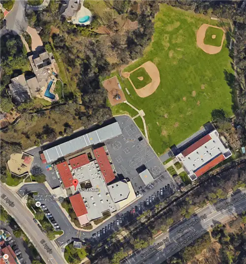

Odin Paterson
"OP"
My Roots
From the UK to the sunny shores of San Diego, my roots are everywhere. They spread like the great oak tree in the park in Oakland where I used to play. It was Mosswood Park. They reach far and wide to my relatives in England, Scotland, and Australia. Even across the ocean which my parents moved when I was born, my roots stayed strong. They reach deep, giving me opportunities to grow like playing for the England national team or living at the nicest beach in the world. Most of all, my roots give me stability, as the people who I am related to hold me up when I feel like blowing over in the wind.
Sports, A Journey for Me
My journey with sports started in the scruffy field out the back of my elementary school. I was in third grade and my dad had just convinced me to start playing rec soccer at RSF Attack with him as the coach. I was reluctant to go at first, but soon after I realized that it was the best decision I could’ve made. Through the years that followed rec, then competitive, and then high school, I picked up (and put down) many other sports but the ones that stuck were soccer and volleyball. Both sports have given me so much in that they allowed me to become a leader, deal with pressure, and most of all, meet new people.

My Values
I think that one of the most important things that I think about often is, when I die, I want to be remembered well. I want people to remember me as a charismatic, outgoing, and funny guy sort of like Seth Cohen from the OC. However, I know not all people can think that. So, I will settle for just being remembered as a half decent guy. As long as I can achieve this, I know I can be happy. So I will be determined and work hard in life and at the things that I do, in order to achieve this goal. Funnily enough however, I have found that working hard can make some people remember you in the wrong way, but to be honest that may be a price I must pay for greater gain.